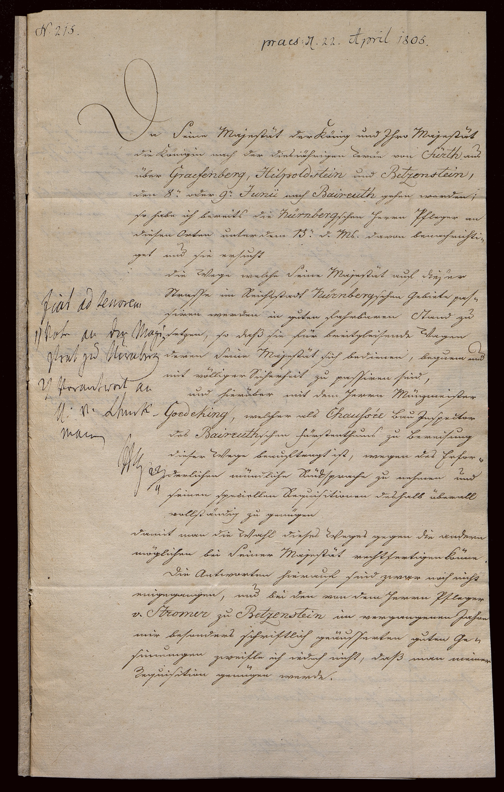

StA Nürnberg, Ansbacher Archivalien, 6881



Kommentar
Editor: magdalena.weileder@textgrid.de
Archiv: StA Nürnberg
Bestand: Ansbacher Archivalien
Signatur: 6881
Ort:
Datum: 1805 April 22
Schlagwort: Akt
Schwierigkeitsgrad: leicht
Kurzbetreff:
Schreiben des Kammerpräsidenten von Ansbach und Bayreuth an den Kreisdirektionsgesandten des fränkischen Kreises
Schreiben des Kammerpräsidenten von Ansbach und Bayreuth an den Kreisdirektionsgesandten des fränkischen Kreises
Schreiberhände:
- Bearbeitungsvermerke (S1)
- Reinschrift (S2)
Kommentar:
Das hier gezeigte Schreiben des Kammerpräsidenten von Ansbach und Bayreuth, Friedrich von Schuckmann, an Conrad Sigmund Carl von Haenlein, Kreisdirektionsgesandter des fränkischen Kreises, entstammt einem Akt über eine Reise König Ludwigs I. nach Franken. Schuckmann hatte einige Tage zuvor die Nürnbergischen Pfleger ersucht, dafür zu sorgen, dass die Straßen auf der Strecke von Fürth nach Bayreuth in gutem, fahrbaren Stand seien, damit das Königspaar in seinem breitspurigen Wagen darauf reisen könne. Er zweifelt nicht an der Zuverlässigkeit der Pfleger, hat aber bislang keine Antwort erhalten. Auf der folgenden, hier nicht mehr gezeigten Seite bittet er daher den Kreisdirektionsgesandten, vorsichtshalber beim Nürnberger Magistrat die Erfüllung dieser Aufgabe anzumahnen.
Der Text ist sehr ordentlich in Kurrent geschrieben, am linken Rand befindet sich ein eilig hingeworfener Vermerk von einer anderen Hand. Namen und Fremdwörter sind jeweils in humanistischer Kursive, gegebenenfalls mit Endungen in Kurrent (Z. 7, 11: Nürnbergschen, Z. 18: Baireuthschen) geschrieben.
Das hier gezeigte Schreiben des Kammerpräsidenten von Ansbach und Bayreuth, Friedrich von Schuckmann, an Conrad Sigmund Carl von Haenlein, Kreisdirektionsgesandter des fränkischen Kreises, entstammt einem Akt über eine Reise König Ludwigs I. nach Franken. Schuckmann hatte einige Tage zuvor die Nürnbergischen Pfleger ersucht, dafür zu sorgen, dass die Straßen auf der Strecke von Fürth nach Bayreuth in gutem, fahrbaren Stand seien, damit das Königspaar in seinem breitspurigen Wagen darauf reisen könne. Er zweifelt nicht an der Zuverlässigkeit der Pfleger, hat aber bislang keine Antwort erhalten. Auf der folgenden, hier nicht mehr gezeigten Seite bittet er daher den Kreisdirektionsgesandten, vorsichtshalber beim Nürnberger Magistrat die Erfüllung dieser Aufgabe anzumahnen.
Der Text ist sehr ordentlich in Kurrent geschrieben, am linken Rand befindet sich ein eilig hingeworfener Vermerk von einer anderen Hand. Namen und Fremdwörter sind jeweils in humanistischer Kursive, gegebenenfalls mit Endungen in Kurrent (Z. 7, 11: Nürnbergschen, Z. 18: Baireuthschen) geschrieben.
Entzifferung
(Absatz Beginn)
1 (Bearbeitungsvermerke:) N(ummer) 215.(Wechsel des Schriftsystems)
2 praes(entatum) d(en) 22. April 1805.(Wechsel des Schriftsystems)
3 (Reinschrift:) Da Seine Majestät der König und Jhro Majestät
4 die Königin nach der diesiährigen Revüe von Fürth(Wechsel des Schriftsystems) aus
5 über Graefenberg(Wechsel des Schriftsystems), Hilpoldstein(Wechsel des Schriftsystems) und Betzenstein(Wechsel des Schriftsystems),
6 den 8.(ten) oder 9.(ten)Junii(Wechsel des Schriftsystems) nach Baireuth(Wechsel des Schriftsystems) gehen werden;
7 so habe ich bereits die Nürnberg(Wechsel des Schriftsystems)schen Herrn Pfleger an
8 diesen Orten unter dem 13.(ten) d(ieses) M(onat)s davon benachrichti-
9 get und sie ersucht
10 die Wege welche Seine Majestät auf dieser
11 Strasse im Reichsstadt Nürnberg(Wechsel des Schriftsystems)schen Gebiete pas-
12 siren werden in guten fahrbaren Stand zu
13 setzen, so daß sie für breitgleisende Wagen
14 deren Seine Majestät sich bedienen, bequem und
15 mit völliger Sicherheit zu passiren sind,
16 und hierüber mit dem Herrn Münzmeister
17 Goedeking(Wechsel des Schriftsystems), welcher als Chaussée(Wechsel des Schriftsystems) Bau Jnspector
18 des Baireuth(Wechsel des Schriftsystems)schen Fürstenthums zu Bereisung
19 dieser Wege beauftragt ist, wegen des Erfor-
20 derlichen mündliche Rücksprache zu nehmen und
21 seinen speciellen Requisitionen deshalb überall
22 vollständig zu genügen
23 damit man die Wahl dieses Weges gegen die andern
24 möglichen bei Seiner Majestät rechtfertigen könne.
25 Die Antworten hierauf sind zwar noch nicht
26 eingegangen, und bei den von dem Herrn Pfleger
27 v(on) Stromer(Wechsel des Schriftsystems) zu Betzenstein(Wechsel des Schriftsystems) im vergangenen Jahre
28 mir besonders schriftlich geäusserten guten Ge-
29 sinnungen zweifle ich iedoch nicht, daß man meiner
30 Requisition genügen werde.
31 [Vermerk am linken Rand:] (Bearbeitungsvermerke:) fiat ad tenorem(Wechsel des Schriftsystems)
32 1) Note an den Magi-
33 strat zu Nürnberg
34 2) Vorantwort an
35 h(errn) v(on) Schuck-(Wechsel des Schriftsystems)
36 mann(Wechsel des Schriftsystems)
37 [Paraphe, unleserlich] 22/4
(Absatz Ende)
Transkription
(Absatz Beginn)
1 (Bearbeitungsvermerke:) Nummer 215.(Wechsel des Schriftsystems)
2 Praesentatum den 22. April 1805.(Wechsel des Schriftsystems)
3 (Reinschrift:) Da Seine Majestät der König und Ihro Majestät
4 die Königin nach der diesjährigen Revüe von Fürth(Wechsel des Schriftsystems) aus
5 über Graefenberg(Wechsel des Schriftsystems), Hilpoldstein(Wechsel des Schriftsystems) und Betzenstein(Wechsel des Schriftsystems)
6 den 8ten oder 9tenJunii(Wechsel des Schriftsystems) nach Baireuth(Wechsel des Schriftsystems) gehen werden,
7 so habe ich bereits die Nürnberg(Wechsel des Schriftsystems)schen Herrn Pfleger an
8 diesen Orten unter dem 13ten dieses Monats davon benachrichti-
9 get und sie ersucht,
10 die Wege, welche Seine Majestät auf dieser
11 Strasse im Reichsstadt Nürnberg(Wechsel des Schriftsystems)schen Gebiete pas-
12 siren werden, in guten fahrbaren Stand zu
13 setzen, so daß sie für breitgleisende Wagen,
14 deren Seine Majestät sich bedienen, bequem und
15 mit völliger Sicherheit zu passiren sind,
16 und hierüber mit dem Herrn Münzmeister
17 Goedeking(Wechsel des Schriftsystems), welcher als Chaussée(Wechsel des Schriftsystems)bauinspector
18 des Baireuth(Wechsel des Schriftsystems)schen Fürstenthums zu Bereisung
19 dieser Wege beauftragt ist, wegen des Erfor-
20 derlichen mündliche Rücksprache zu nehmen, und
21 seinen speciellen Requisitionen deshalb überall
22 vollständig zu genügen,
23 damit man die Wahl dieses Weges gegen die andern
24 möglichen bei Seiner Majestät rechtfertigen könne.
25 Die Antworten hierauf sind zwar noch nicht
26 eingegangen, und bei den von dem Herrn Pfleger
27 von Stromer(Wechsel des Schriftsystems) zu Betzenstein(Wechsel des Schriftsystems) im vergangenen Jahre
28 mir besonders schriftlich geäusserten guten Ge-
29 sinnungen zweifle ich iedoch nicht, daß man meiner
30 Requisition genügen werde.
31 [Vermerk am linken Rand:] (Bearbeitungsvermerke:) Fiat ad tenorem(Wechsel des Schriftsystems)
32 1) Note an den Magi-
33 strat zu Nürnberg
34 2) Vorantwort an
35 Herrn von Schuck-(Wechsel des Schriftsystems)
36 mann(Wechsel des Schriftsystems)
37 [Namenskürzel] 22/4
(Absatz Ende)